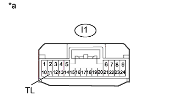

СЕНСОРНАЯ СИСТЕМА ПОМОЩИ ПРИ ПАРКОВКЕ TOYOTA (с 4 датчиками) > Цепь реле задних фонарей |
| 1.ПРОВЕРЬТЕ ЗАДНИЕ ФОНАРИ |
Переведите переключатель освещения в положение TAIL.
Убедитесь в том, что задние фонари включаются.
|
| ||||
| OK | |
| 2.ПРОВЕРЬТЕ ЖГУТ ПРОВОДОВ И РАЗЪЕМ (ЭБУ ПРЕДУПРЕЖДЕНИЯ О НЕДОПУСТИМОЙ ДИСТАНЦИИ – АККУМУЛЯТОРНАЯ БАТАРЕЯ) |
|  |
Отсоедините разъем I1 ЭБУ предупреждения о недопустимой дистанции.
Измерьте напряжение в соответствии со значениями, приведенными в таблице.
| Контакты для подключения диагностического прибора | Положение переключателя | Заданные условия |
| I1-11 (TL) - масса | Зажигание включено, переключатель освещения TAIL | 7 В или выше |
| Зажигание включено, переключатель освещения не в положении TAIL | Менее 1,5 В |
| *a | Вид спереди разъема со стороны жгута проводов: (к ЭБУ предупреждения о недопустимой дистанции) |
|
| ||||
| OK | ||
| ||